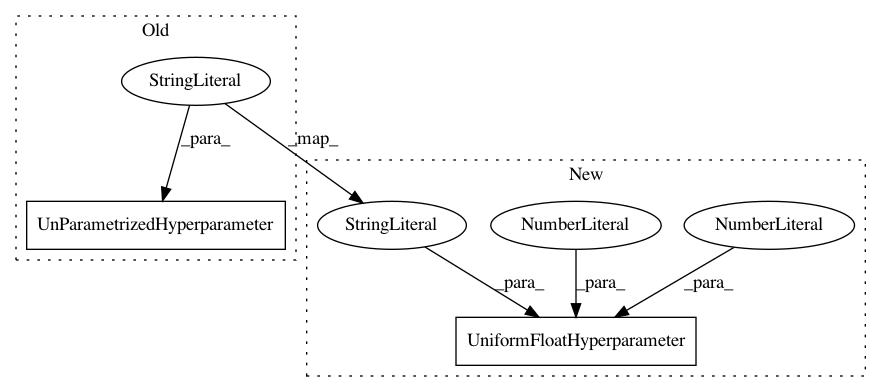

ec73e1c57807ccc0ca111953f02b9aa0a14fe862,ParamSklearn/components/classification/decision_tree.py,DecisionTree,get_hyperparameter_search_space,#Any#,82
Before Change
criterion = CategoricalHyperparameter(
"criterion", ["gini", "entropy"], default="gini")
max_features = Constant("max_features", 1.0)
max_depth = UnParametrizedHyperparameter("max_depth", "None")
min_samples_split = UniformIntegerHyperparameter(
"min_samples_split", 2, 20, default=2)
min_samples_leaf = UniformIntegerHyperparameter(
"min_samples_leaf", 1, 20, default=1)
After Change
criterion = CategoricalHyperparameter(
"criterion", ["gini", "entropy"], default="gini")
max_features = Constant("max_features", 1.0)
max_depth = UniformFloatHyperparameter("max_depth", 0., 1., default=1.)
min_samples_split = UniformIntegerHyperparameter(
"min_samples_split", 2, 20, default=2)
min_samples_leaf = UniformIntegerHyperparameter(
"min_samples_leaf", 1, 20, default=1)
In pattern: SUPERPATTERN
Frequency: 3
Non-data size: 2
Instances
Project Name: automl/auto-sklearn
Commit Name: ec73e1c57807ccc0ca111953f02b9aa0a14fe862
Time: 2015-10-01
Author: feurerm@informatik.uni-freiburg.de
File Name: ParamSklearn/components/classification/decision_tree.py
Class Name: DecisionTree
Method Name: get_hyperparameter_search_space
Project Name: automl/auto-sklearn
Commit Name: 6d373968731cc32c73d32fb0a13fc528077011d2
Time: 2018-03-26
Author: feurerm@informatik.uni-freiburg.de
File Name: autosklearn/pipeline/components/regression/xgradient_boosting.py
Class Name: XGradientBoostingRegressor
Method Name: get_hyperparameter_search_space
Project Name: automl/auto-sklearn
Commit Name: 187e2b135021b729dc8fb98663644f5578e2b810
Time: 2018-03-22
Author: feurerm@informatik.uni-freiburg.de
File Name: autosklearn/pipeline/components/classification/xgradient_boosting.py
Class Name: XGradientBoostingClassifier
Method Name: get_hyperparameter_search_space